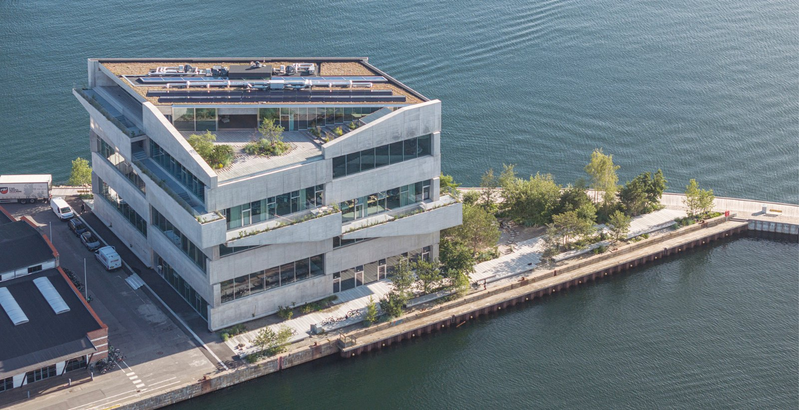
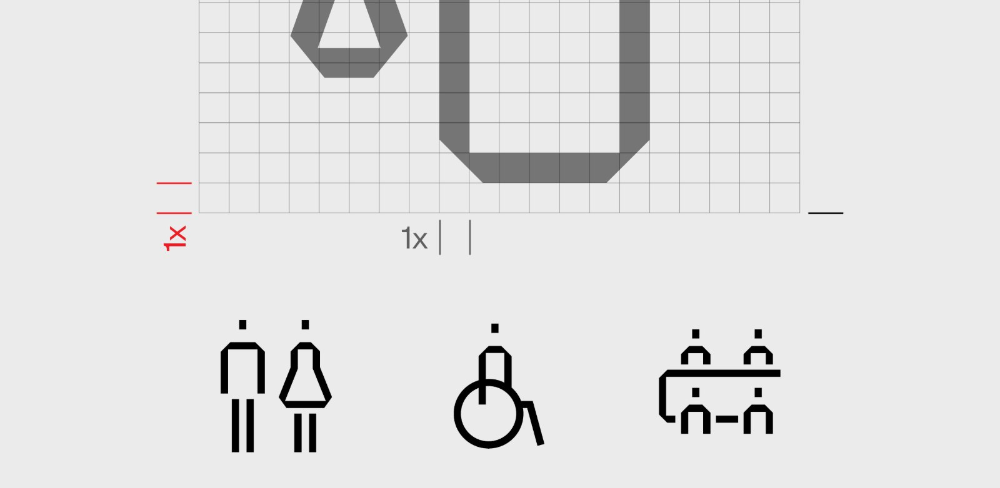
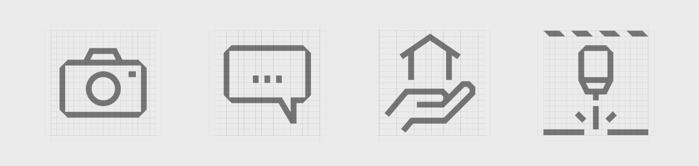
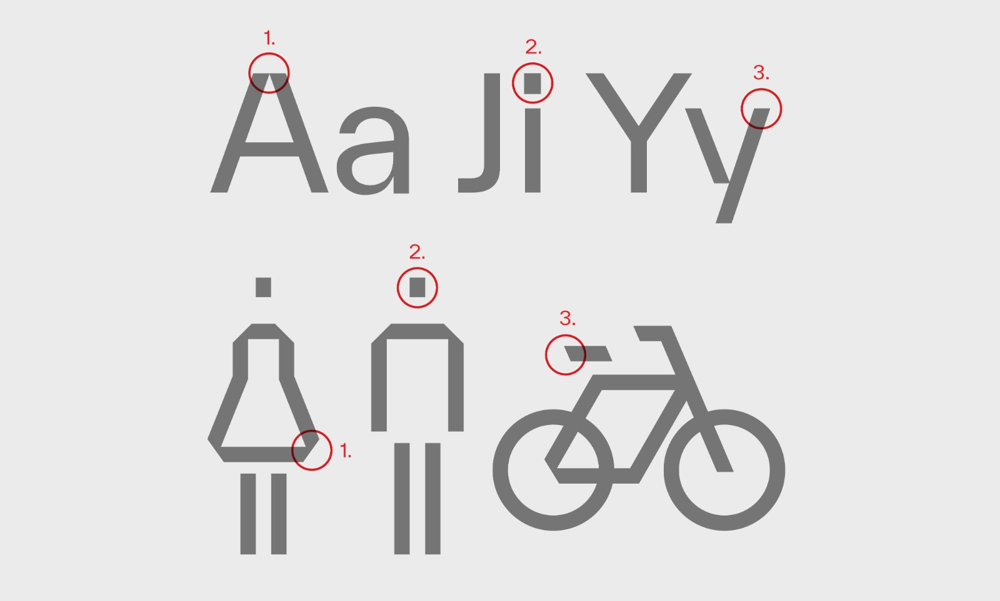
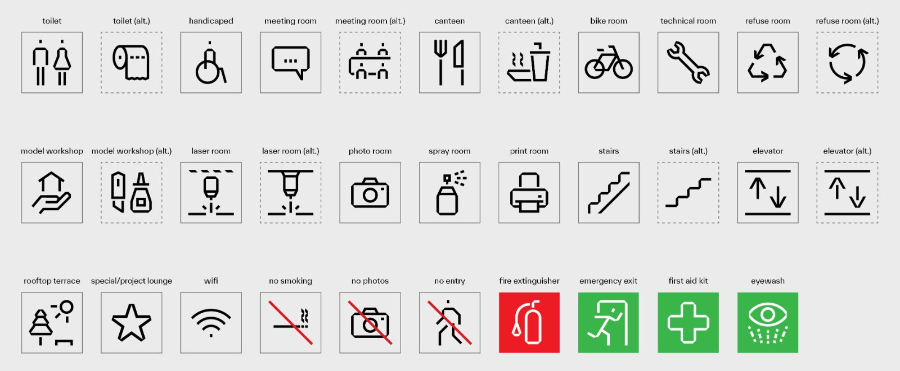
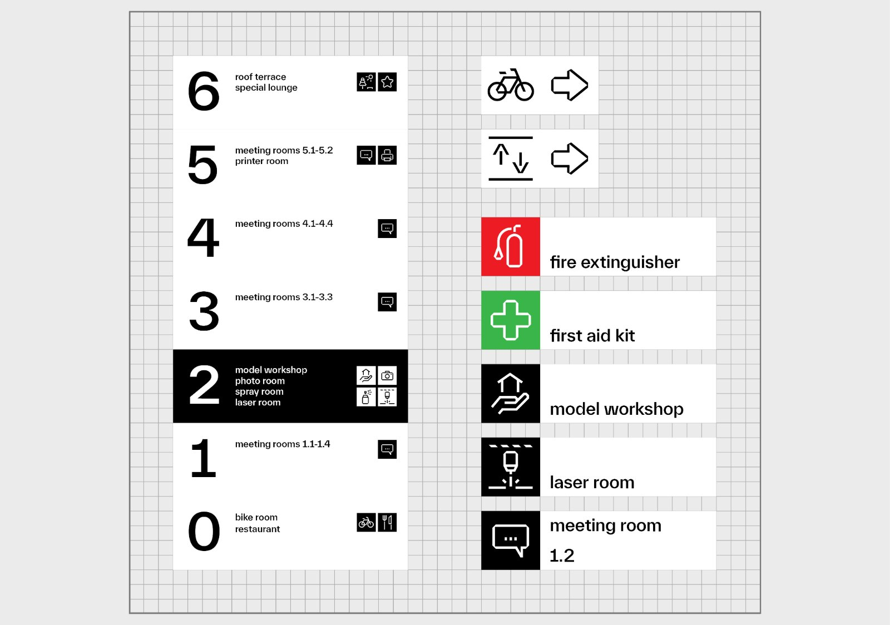

BHQ Signage & Wayfinding
In this project, I focused on designing a comprehensive iconography and signage system for the new headquarters of the architecture studio BIG - Bjarke Ingels Group, emphasizing clarity, usability, and visual consistency. The elements were developed to align with the office’s visual identity, featuring black and white icons inspired by the ones on BIG’s website for their project portfolio and other visual materials. The icons were designed not only to guide but also to convey a sense of character, bringing personality to the wayfinding system and reflecting the creative spirit of the studio.

The main users of this building are employees, who will quickly become familiar with the layout within a short time, and clients or visitors, who will generally be guided rather than navigating on their own. Because of this, extensive signage is not necessary here, unlike in public buildings with many one-time or infrequent visitors, where clear wayfinding systems are essential.


The iconography was developed using the same design details as the typeface TWK Everett, which is the font the company uses across its branding. Below, we can see a complete package of the icons.


